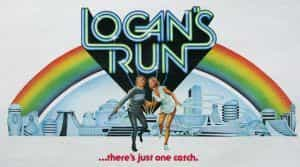
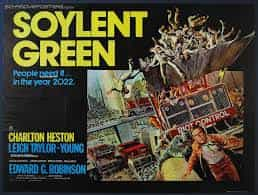

Quintus can be found at qcurtius.com. He is the author of the books On Duties, Thirty Seven, Sallust: The Conspiracy Of Catiline And The War Of Jugurtha, and other books. His work has been reviewed at Taki's Magazine. He can be followed on Twitter


The BBC recently ran an article describing how the 1987 Arnold Schwarzenegger action film The Running Man contained many supposedly accurate predictions of a dystopian future. The article makes many valid points about how some elements of the film’s plot seem to describe our current social landscape, but the author forgets that The Running Man was in many ways a derivative film. Much of its “predictions” were made by less promoted forerunners in the 1970s.
In some cases, accurate predictions of dystopian futures go back much farther, to the uncannily accurate novels of H.G. Wells (as we will discuss here). My goal here is to point out some of these 1970s films that may not be well known to young audiences today, and to explain why these movies are still worth watching. We will the leap-frog back in time to the early twentieth century to see what H.G. Wells may have had to say on the subject.
No dystopian science fiction book or film can get everything right. It’s hard enough to describe the present, let alone see into the future. But a film or book does not really need to get everything right: as long as it can illuminate some aspect of the world we live in, we can derive some benefit from it. I don’t want to disparage The Running Man; I saw it when it came out and found it enjoyable. But we have to give credit to those films that The Running Man leaned heavily on; some of these movies are almost totally unknown today.

Take Logan’s Run (1976), for example. It imagined a future where all the world’s population was housed comfortably under domed cities. To maintain the balance between population and available resources, the authorities “terminated” people when they reached the age of 30. The liquidation work was done by disposal specialists called “sandmen.” One of these sandmen was himself headed for termination and decided to make a run for it. The world of Logan’s Run is a world where only new things are valued; tradition means nothing; and endless entertainment has become a substitute for actual accomplishment.
Soylent Green (1973) told another dystopian story, one that rings familiar bells of depleted resources, climate disasters, and authoritarian control of every aspect of human life. Told as a kind of detective story, the movie unfolds as the main characters pursue a homicide investigation. But the clues lead to dark places that show just how desperate the world had become to assure its food supply. The familiar dystopian themes are all here: corporate control, tightly controlled secrets, environmental mismanagement, and complete public apathy.

But the greatest of The Running Man’s forerunners—and certainly one of the most underappreciated films of the 1970s—was Norman Jewison’s strange and riveting Rollerball (1975). This dark and profound film has only gotten better since its release and, despite advances in film technology, still delivers on every level. It richly deserves its cult status.
The plot: corporations control everything (of course) in the future, and man’s quest for individuality and personal liberty is buried beneath a deluge of “bread and circus” spectacles arranged the powers that be. The entertainment takes the form of a roller-derby type game called rollerball, in which teams compete with each other to throw a metal ball into a special receptacle. The game’s biggest star, Johnathan E, is being pressured by his corporate bosses to retire. We never are told the precise reason, but it likely has something to do with the fact that Johnathan has become too popular (and therefore too dangerous). Hence we have the theme of the crushing of the individual before the altar of the soulless collective: he is told he must resign from the game “for the common good.”
James Caan in Rollerball (1975)
Johnathan E inhabits a dark world, to be sure. All knowledge of the past seems to have been forgotten or deliberately suppressed. One unsettling scene involves the main character going to an archive and being told that no information about the 13th century is available. This kind of scene—or something similar—hits too close to home for us to laugh along with it. The past doesn’t matter because everyone’s existence is designed to serve the corporate master. Knowledge has been replaced by emotion, and wisdom by blood-lust. “Comfort is freedom,” as one of the female characters says, chillingly echoing the ethic of too many people today. The climactic scene of the film, with its orgy of violence, suggests that the individual can indeed triumph over its environment, but only at a cost that few are willing to pay.
I can’t end this article without mentioning what may be the granddaddy of all the modern dystopian stories: H.G. Wells’s When the Sleeper Wakes. Published in serialized form in 1899, it was later reworked into a novel named The Sleeper Awakes (1910). The future it predicts is one of unrestrained commercialism, complete corporate control, and the sinister manipulation of the masses by a few privileged elites.
When The Sleeper Wakes (1899): a future of gaudy commercialism, mind control, and permanent instability
The basic plot describes the awakening from a coma-like sleep of a man named Graham after a couple hundred years. He finds that he controls a sizeable part of the world but his “assets” are run by a trust named the White Council. There are rebels who want to overthrow the existing order, but they seem to be no better than the despots who currently run the show. When The Sleeper Wakes anticipates nearly all the motifs of the modern dystopian science fiction tale, and does it with the style and wit that could only come from Wells’s pen. People get all their information from “babble machines” that pump out fluff news stories (the first literary reference to so-called “fake news”); people can go to “pleasure cities” to have their intimate needs serviced.
It’s hard to believe that it has been thirty years since the appearance of the The Running Man. If you want to delve deeper into the dystopian genre, you owe it to yourself to give these older movies a close look. “The future isn’t what it used to be,” goes the old adage. But after watching these movies and checking out When the Sleeper Wakes, you may feel differently.
Read More: Soviet Defector Yuri Bezmenov Predicted How America Would Decline